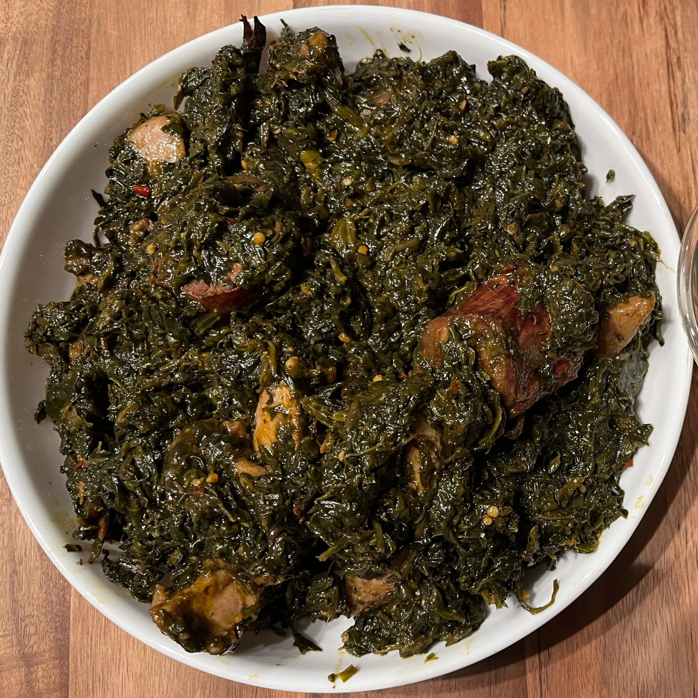

Liberian Fried Spinach

Description
Liberian fried spinach is a beloved dish that highlights the rich flavors and culinary traditions of Liberia. This dish typically features fresh spinach leaves, which are sautéed with a vibrant blend of onions, garlic, tomatoes, and peppers. The vegetables are often cooked in red palm oil, a staple in West African cuisine that imparts a distinctive, slightly nutty flavor and a striking reddish hue to the dish.
In addition to the base ingredients, variations of Liberian fried spinach might include proteins such as dried fish, shrimp, or chunks of meat, adding depth and heartiness to the meal. Seasoned with spices like cayenne pepper and bouillon cubes, the dish balances heat and savory notes, creating a flavorful and satisfying experience. Liberian fried spinach is typically served as a side dish, complementing rice, fufu, or boiled plantains, and is a testament to the vibrant and diverse culinary landscape of Liberia.
Ingredients
- 1 pound fresh spinach leaves, washed and chopped
- 2 tablespoons red palm oil (or vegetable oil if unavailable)
- 1 large onion, finely chopped
- 2 cloves garlic, minced
- 2 medium tomatoes, diced
- 1 bell pepper, chopped
- 1-2 scotch bonnet peppers, finely chopped (optional for heat)
- 1 cup dried fish or shrimp (optional)
- 1 bouillon cube (chicken or vegetable)
- Salt and pepper to taste
Steps
- Wash and chop the spinach leaves.
- Finely chop the onion, garlic, tomatoes, and bell pepper.
- If using dried fish or shrimp, soak them in warm water for about 10 minutes, then drain.
- In a large skillet or saucepan, heat the red palm oil over medium heat. If using vegetable oil, heat until shimmering.
- Add the chopped onions and garlic to the pan. Sauté for about 3-4 minutes, until the onions become translucent and fragrant.
- Add the diced tomatoes and bell pepper to the pan. Cook for another 5 minutes, stirring occasionally, until the tomato break down and the mixture becomes saucy.
- If using dried fish or shrimp, add them to the pan now. Stir to combine and cook for another 3-4 minutes.
- Add the chopped spinach to the pan. It may seem like a lot at first, but the spinach will wilt significantly as it cooks. Stir well to coat the spinach with the tomato mixture.
- Crumble the bouillon cube into the pan and stir to combine. Add salt and pepper to taste.
- If you like your dish spicy, add the finely chopped scotch bonnet peppers. Be cautious with the amount, as they are very hot.
- Reduce the heat to low and let the spinach cook for about 10 minutes, stirring occasionally, until it is fully wilt and all the flavors are well combined.
- Once the spinach is tender and well-cooked, remove the pan from the heat. Serve the Liberian fried spinach hot, as a side dish to rice, fufu, or boiled plantains.